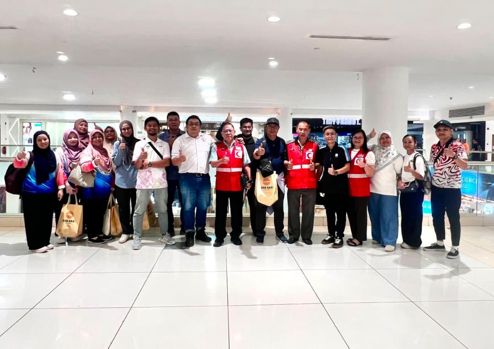
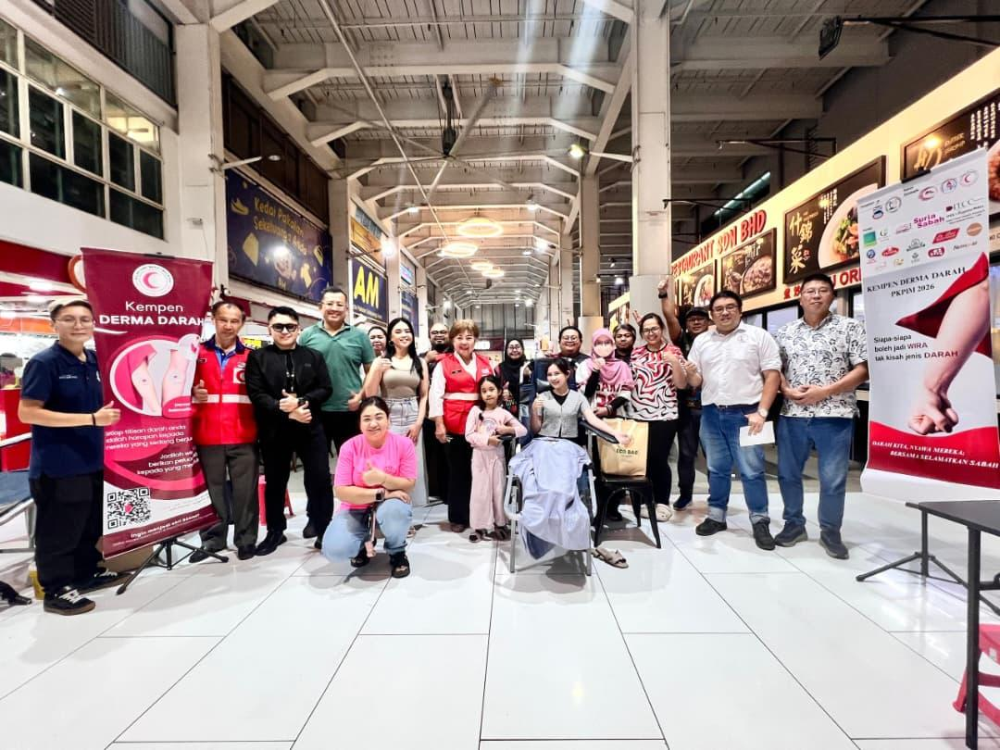
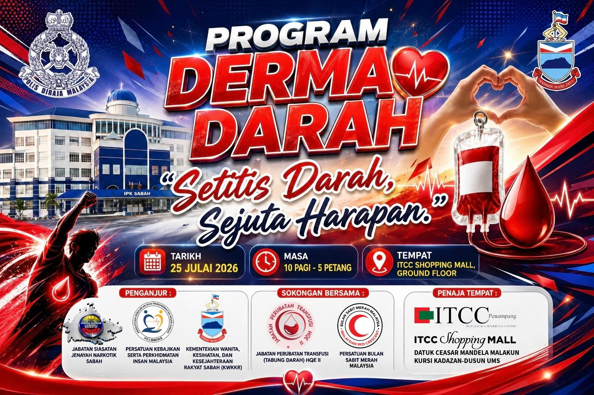

Derma Darah
Pengambilan darah secara sukarela oleh pasukan perubatan bagi penderma yang layak.
DARAH KITA, NYAWA MEREKA — BERSAMA SELAMATKAN SABAH
Kempen Derma Darah PKPIM 2026 dilaksanakan di enam lokasi strategik sekitar Kota Kinabalu dan kawasan berdekatan untuk membantu meningkatkan bekalan darah serta membina budaya derma darah secara tetap di Sabah.
Pengambilan darah secara sukarela oleh pasukan perubatan bagi penderma yang layak.
Ceramah kesedaran berkaitan bahaya penyalahgunaan dadah dan langkah pencegahan.
Demonstrasi CPR, penggunaan AED dan bantuan kecemasan asas kepada masyarakat.
| Lokasi | Siri 1 | Siri 2 |
|---|---|---|
| Suria Sabah | 4–5 Jul 2026 | 3–4 Oct 2026 |
| EG Mall Inanam | 11–12 Jul 2026 | 10–11 Oct 2026 |
| City Mall Likas | 18–19 Jul 2026 | 17–18 Oct 2026 |
| ITCC Penampang | 25–26 Jul 2026 | 24–25 Oct 2026 |
| Servay Evergreen Putatan | 1–2 Aug 2026 | 31 Oct–1 Nov 2026 |
| 1 Borneo Hypermall | 8–9 Aug 2026 | 7–8 Nov 2026 |
Jadual dan lokasi Kempen Derma Darah PKPIM 2027 akan diumumkan selepas pengesahan bersama rakan strategik dan lokasi terlibat.



Ikuti program PKPIM dan bersama-sama membantu menyokong keperluan bekalan darah di Sabah.